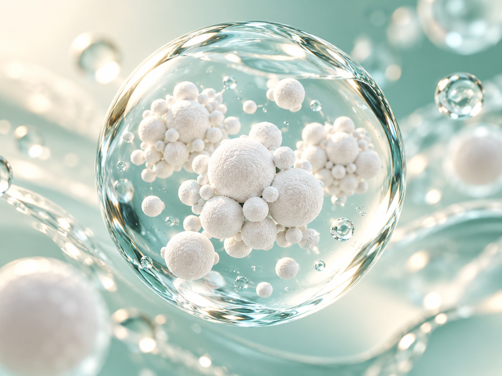
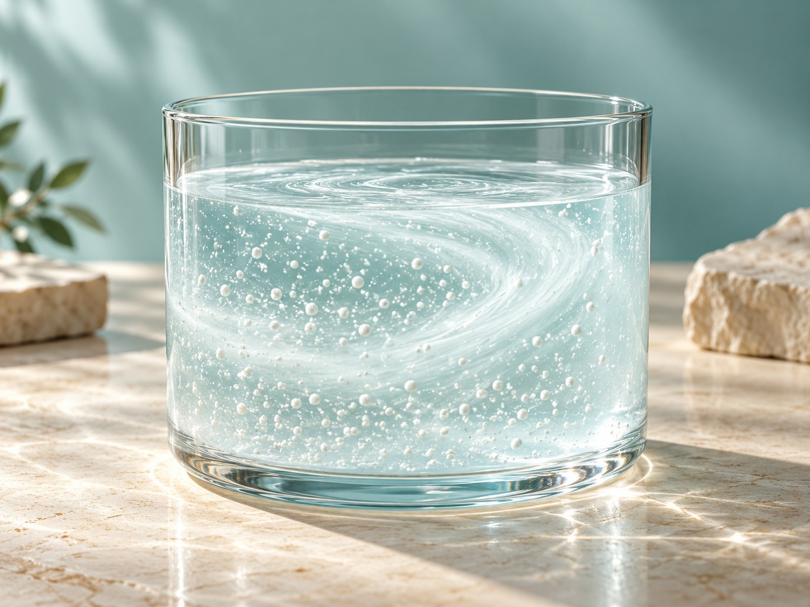

毛孩的生活用品
寵物睡墊、外出籠外側等用品，清潔髒污後，依物品材質與包裝說明使用。
PET ACCESSORIES / HOME / EVERYDAY CARE
把日常照顧，從玄關開始。
寵物用品・居家環境・衣物鞋包，一瓶融入日常。
定價 NT$450 / 200 mL
查看通路資訊了解檢驗結果不需稀釋，依使用方式均勻噴灑後晾乾。
使用前先測試材質相容性。


FROM THE ENTRYWAY TO EVERYDAY LIVING
放下提袋、脫下外套、換下鞋子，回家是一天裡最放鬆的時刻。從玄關開始整理日常接觸的物品，也把細心延伸到與毛孩共享的生活空間。
長效安鋅抗菌噴劑以超純水與STC奈米氧化鋅抗菌複合材為主要成分，結合均勻穩定分散的配方設計。從衣物鞋包，到寵物用品與居家物品，依材質需求使用。
寵物用途為用品與生活環境；勿直接噴灑動物、人體、食物及餐具。
ONE BOTTLE / EVERYDAY SPACES
寵物睡墊、外出籠外側等用品，清潔髒污後，依物品材質與包裝說明使用。

桌面、門把等經常接觸的居家物品，先於不明顯處測試材質相容性。

外套、提袋、背包與鞋面，依原廠方式均勻噴灑，再靜置晾乾。
先清潔可見髒污、測試材質，使用後充分晾乾。本品不取代日常清潔與洗滌。
寵物用品與居家情境依原廠包裝用途資料；本報告未測試用品表面噴灑效果、寵物接觸或舔食安全性。請勿直接噴灑動物，使用時讓兒童與寵物遠離噴霧，並避免舔食處理物品。充分晾乾不代表已驗證寵物接觸安全。
MATERIAL SCIENCE / FORMULA DESIGN

原廠選用奈米氧化鋅抗菌材料，將材料科技運用於日常物品照顧。

以超純水作為水性配方基底，搭配STC奈米氧化鋅抗菌複合材。

透過專業乳化技術，使奈米氧化鋅抗菌材均勻、穩定分散。
把應用延伸到寵物用品與生活環境；使用前先確認物品材質。
材料與分散狀態為生成概念意象，非顯微影像或實測粒徑分布；30 奈米與均勻穩定分散依原廠包裝及產品說明，非本報告驗證項目。未取得現售完整配方、濃度或粒徑檢測資料。情境圖為應用示意。
TEST RESULT / SPECIFIED CONDITIONS
送檢樣品的抑菌活性（Antimicrobial Activity）；不是立即除菌或噴後持續24小時的防護保證。
現售 200 mL 成品與送檢樣品的配方、濃度及批次關聯待確認；本數據不可直接視為現售成品或用品表面噴灑效果。
| 檢測機構 | Intertek 全國公證檢驗股份有限公司 |
|---|---|
| 報告編號 | TWNC01059356 |
| 報告日期 | 2022/03/02 |
| 送檢品名／型號 | Zinc Oxide Sanitizer／LI-02；測試樣品描述 White liquid |
| 送檢樣品製造日 | 2022/02/01（僅報告樣品；不代表現售批次） |
| 測試菌株 | Escherichia coli ATCC 8739 |
| 接觸時間 | 24 小時 |
| 測試程序 | 依申請人要求，參考 USP XLI <51>；將菌液接種於樣品、混合並培養 24 小時後計數，非用品表面噴灑試驗 |
| 菌數變化 | 初始 2.4 × 105 CFU/mL； 24小時後回收菌數 <10 CFU/mL |
報告未評估立即除菌、所有菌種或病毒、噴後持續24小時的防護、除臭或寵物接觸安全；也不是現售商品的認證或完整 USP <51> 符合性判定。實際效果無法僅由此報告推定。
閱讀完整四頁檢驗報告HOW TO USE
先於不明顯處少量測試，確認無變色或其他異常後再使用。
依原廠衣物鞋子使用說明，來回均勻噴灑2–3次。
充分晾乾後再接觸或使用物品。使用及補噴方式依包裝標示，清洗或摩擦會影響表面狀態。
PRODUCT INFORMATION
| 商品名稱 | 長效安鋅抗菌噴劑 |
|---|---|
| 品牌 | STC Nanotech |
| 容量／規格 | 200 mL／單瓶 |
| 定價／幣別 | NT$450／TWD 新台幣 |
| 主要成分 | 超純水、STC 奈米氧化鋅抗菌複合材（原廠產品說明；包裝原稿成分欄寫「STC奈米氧化鋅抗菌材」）。現售完整配方與濃度待品牌確認 |
| 配方特點 | 不含酒精、次氯酸（依原廠資料） |
| 用途範圍 | 寵物用品、居家物品、衣物及鞋包；依實際包裝使用說明 |
| 製造地 | 台灣 |
| 製造日期／有效期間／批號 | 依實際商品包裝標示 |
| 保存方式 | 保持容器密閉、遠離火源，保存於通風陰涼處，避免高溫及陽光直射 |
| 製造商（包裝原稿） | 勝勢應用科學股份有限公司；原稿電話 +886-2-2697-3616。現售標籤及業者資料待品牌確認 |
| 供應業者（官網） | 勝勢科技股份有限公司 |
| 聯絡資料 | 02-2831-2989／info@stcoptics.com |
| 地址 | 221416 新北市汐止區新台五路1段93號17樓之11 |
「長效」為既有商品名稱的一部分；這份報告的24小時為樣品與菌液接觸培養時間，不能直接解讀為噴後持續24小時有效。補噴方式以實際包裝為準。
本品適用於寵物用品與生活環境、居家物品、衣物及鞋包；勿直接噴灑人體、動物或食品。「不含酒精」不等於可飲用、可吸入或適合所有材質。
避免吸入噴霧及接觸眼睛、傷口。勿直接噴灑人體、動物、食物或餐具。勿與其他清潔劑或化學品混合。置於兒童與寵物無法取得處，保持容器密閉、遠離火源，於通風陰涼處保存，避免高溫及陽光直射。如材質有異常或使用後有不適，請停止使用並尋求專業協助。
MATERIAL / FORMULA

三十奈米為原廠材料資訊，並非成品濃度或本份報告的粒徑檢測結論。材料意象非顯微照片。
原廠產品說明列示超純水與 STC 奈米氧化鋅抗菌複合材。水性配方不等於可飲用、可吸入或適用所有材質。

均勻分散來自原廠技術說明，屬配方設計，並不是第三項已確認成分；圖像不代表成品穩定性試驗。
STC NANOTECH / OUR STORY
STC Nanotech 將材料技術放進日常物品的照顧裡。對我們而言，一瓶噴劑的介紹，應從清楚的成分、適用物品與使用方法開始。長效安鋅抗菌噴劑以超純水與 STC 奈米氧化鋅抗菌複合材為主要材料，讓使用者先了解配方方向，再依物品材質決定如何使用。
回家時放下的背包、換下的鞋子、掛起的外套，以及與寵物共享的生活用品，都是這款產品關注的日常場景。我們希望照顧物品的步驟容易理解：先整理可見髒污，再做局部材質測試，依包裝說明均勻噴灑，並保留充分晾乾的時間。
材料的特點與商品的實際效果，需要分開說明。原廠資料中的三十奈米與乳化分散，描述的是材料及配方設計；檢驗報告則記錄特定樣品、菌株與接觸條件下的結果。我們把數字連同限制一起提供，讓閱讀商品資訊的人有足夠依據做選擇。
寵物用品的情境，也需要細心看待。本品不應直接噴灑動物或人體，生活畫面不代表已完成寵物接觸或舔食安全試驗。清楚交代用途與界線，是商品資訊的一部分，不能由一張照片或一個安心的形容詞取代。
我們期望以清楚的標示、可閱讀的檢驗條件及具體的使用提醒，陪伴每一次物品照顧。當配方、包裝或批次更新，也應重新核對資料，讓材料科技與日常使用之間，保持能被理解與查證的連結。選購時，請先確認容量與單瓶價格，並閱讀保存方法及注意事項。若物品材質或用途有疑問，應先向品牌查詢，取得適用說明後再使用。
比較僅依各品牌公開產品定位與資料範圍，不是同條件實測、銷量排名或效能優劣判定。STC 的已知選購資訊為台灣製造、氧化鋅材料、200 mL 及清楚標價；不能以不同試驗的百分比宣稱優於他牌。未取得可核實銷量資料，不使用熱銷第一等字樣。
| 商品 | 主要定位 | 選購資訊 | 資料範圍 |
|---|---|---|---|
| STC 安鋅 200 mL | 氧化鋅材料與物品照顧 | 台灣製造；單瓶200 mL；定價NT$450 | 報告限LI-02液體樣品；現售關聯待確認 |
| 花王 Resesh Regular | 衣物與布品除臭 | 原廠列衣物、鞋、帽及背包等用途 | 原廠菌種與布上條件不可套用STC |
| Febreze FABRIC Pet | 布品寵物異味照顧 | 原廠主打寵物異味及清新香氣 | 除臭訴求與STC現有抑菌報告不同 |
花王官方資料｜Febreze 官方資料；比較查閱日 2026/10/22。
目前核對的報告沒有除臭試驗，這份商品資料不宣稱已驗證除臭效能。
不是。第 02 張為依需求製作的單瓶與外盒包裝示意，外盒未經實物核對；商品基準規格仍為 200 mL 單瓶，NT$450 為 200 mL 單瓶定價。
Intertek TWNC01059356 記錄 LI-02／White liquid 樣品於指定條件下的結果。現售 200 mL 成品與送檢樣品的配方、濃度及批次關聯待確認；不能由此推定用品表面噴灑、即時除菌、持續防護、病毒、除臭或寵物接觸安全。商品及材料圖片為說明用途，生成外盒並非已確認的出貨包裝。
保留既有九圖，另新增十二張方圖。第 01 張為單瓶白底；第 02 張為一瓶加一盒的生成包裝示意；第 07 至 09 張為無疊加文字的使用情境。單瓶定價 NT$450（TWD），不因示意外盒改變。
查看十二圖下載十二圖與文案本頁為 200 mL／定價 NT$450（TWD）的商品資料與通路素材展示，未提供購物車。尚未確認此規格已於 Shopify 或蝦皮正式上架。下列為品牌與賣場連結，並非已確認的 200 mL 商品購買連結。
STC 母公司官網STC 蝦皮官方賣場CHANNEL ASSET DOWNLOADS
2000×800橫幅、1200×1500手機圖、2048方形商品照，附商品說明與 TWD 商店專用草稿 CSV；匯入前須核對商店幣別。
下載 Shopify 素材九張1200×1200方圖，包含主圖、檢驗條件、材料圖解、用途、規格與使用提醒。
下載蝦皮素材